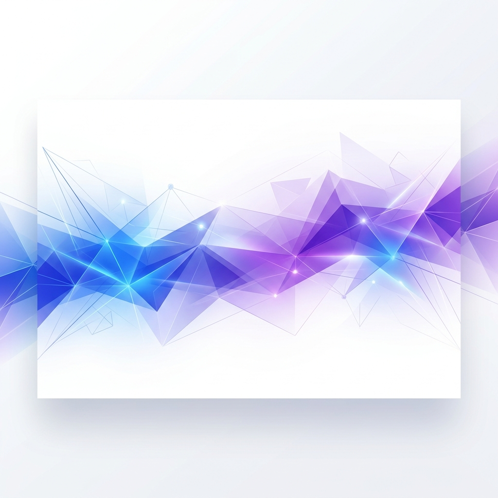

HTML In Canvas
This entire sheet is standard HTML and CSS. Because we are using the experimental
layoutsubtree attribute, the browser renders this element into a
WebGL texture without ever adding it to the main viewport.
Try selecting this text or hovering over the button below. Even as the page
waves or curls in 3D space, the interaction points remain perfectly synchronized with
the visual deformation. This allows for premium, high-fidelity UI that doesn't
sacrifice accessibility.
Material Component